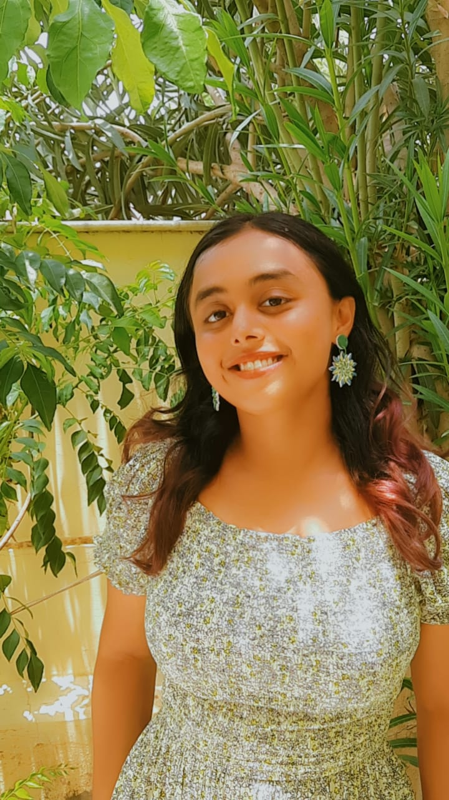
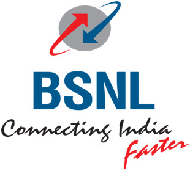

Himani Kulshreshtha

Summary
I am a hardworking and enthusiastic college student. During my course work I have developed a passion for electrical and computer systems and I am intrigued by
its research prospects. I am extermely intersted in pursuing independent research and a good internship would consolidate my future career choice.
Education
BHARATI VIDYAPEETH DEMMED TO BE UNIVERSITY
- 2021-2024 Bachleor of Technology in electrical engineering
DAYALBAGH EDUCATIONAL INSTITUTE
- 2018-2021 Diploma in electrical engineering , Over all grade: 9.32 (CGPA)
SRI AUROBINDO THE CENTER OF NEW EDUCATION
- 2018 , Grade: 93.2 % , High School
Experience
2022 BHARAT SANCHAR NIGAM LIMITED

- Learnt about the basics of networking.
- Working on creating simple networks with the help of Cisco packet tracer software.
2020 GENISUP PVT. LTD.
- Worked on Donald trumps tweets
- Performed sentiment and other analysis on the collected data in python.
- Used modules like pandas , matplotlib , numpy etc.
Projects
- 8085 Microprocessor simulator
- Autonomous Maze follower robot
- Demonstration of concept of self-organization using computer graphics.
- Twitter Data Mining
Interests
- Dancing
- Reading books
- Writing
Languagues
Achievements
- Awarded for the “The Best Paper” at International conference of Dayalbagh Science of Consciousness (DSC), 2023.
- Published review research paper, titled “Revisiting Vedic Math for Engineering Applications” in IJARIIT.
Contact me !